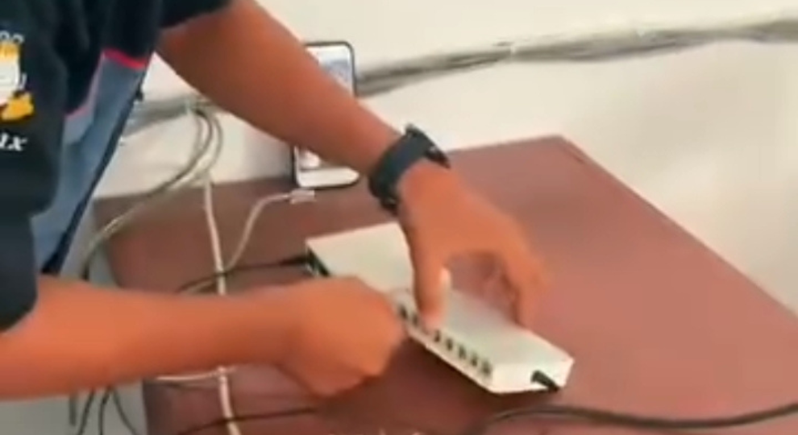
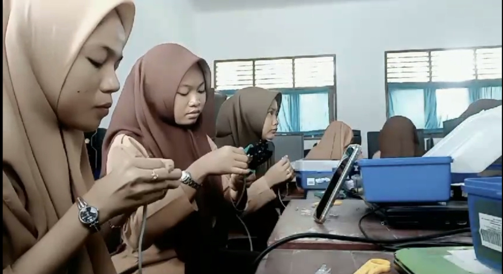

Mencetak Teknisi IT, Network Engineer & IT Support Profesional


Jurusan Teknik Komputer dan Jaringan membekali siswa dengan kompetensi dari dasar sampai lanjutan, meliputi perakitan komputer, instalasi jaringan LAN & WAN, konfigurasi server, mikrotik, keamanan jaringan, serta troubleshooting.
Lulusan TKJ SMK Nusa Indah siap bersertifikasi
Daftarkan dirimu jadi teknisi IT masa depan!
Info PPDB: 0831-4686-8730